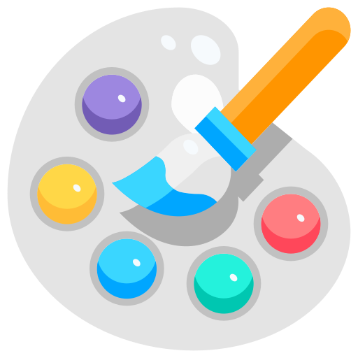

Disciplina de Arte 2º Olavo Bilac
Segundo o dicionário Houaiss, arte é a "produção consciente de obras, formas ou objetos, voltada para a concretização de um ideal de beleza e harmonia ou para a expressão da subjetividade humana". Na verdade, a arte transforma a forma de imaginar e de entender o mundo.
-

Pintura
-
Escultura
-

Música
-

Dança
Pintura
Pintura é a técnica de empregar pigmento a uma superfície, para colori-la, dando-lhe matizes, tons e texturas. Mais especificamente é a arte de pintar uma superfície, como papel, tela ou uma parede.
Escultura
É a técnica de representar objetos e seres através da reprodução de formas. Utiliza-se de materiais como gesso, pedra, madeira, resinas sintéticas, aço, ferro, mármore e das seguintes técnicas: cinzelação, fundição, moldagem ou a aglomeração de partículas.
Música
É a arte de coordenar e transmitir efeitos sonoros, harmoniosos e esteticamente válidos, podendo ser transmitida através da voz ou de instrumentos musicais. A música é uma manifestação artística e cultural de um povo, em determinada época ou região.
Dança
A dança é uma manifestação artística que caracteriza-se pelo uso do corpo para realizar movimentos ritmados, geralmente com o auxílio de sons ou de músicas. Essa é uma atividade que pode ser praticada por crianças, jovens, adultos e idosos, de forma individual ou coletiva.